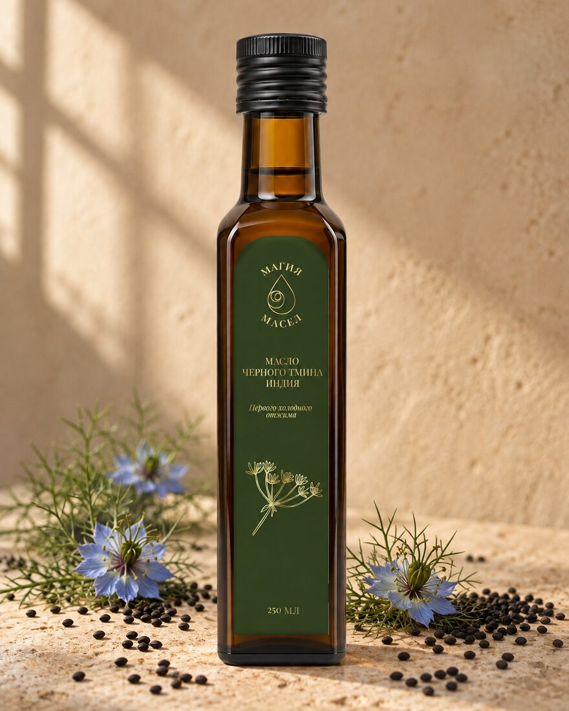

Чёрный тмин
100 мл — 1 500 ₽. 250 мл — 3 500 ₽.
- Что в бутылке.
- Масло из семян чёрного тмина. Сырьё индийское, так записано в декларации. В семенах тимохинон, от него жгучий и резкий вкус.
- На кухне.
- Сбрызнуть готовое блюдо уже на столе: в арабской кухне так поступают с лепёшками. В сковороду не идёт. Второй способ с этикетки: чайная ложка утром натощак.
- Кому не подходит.
- Беременность, тромбоз, после трансплантации органов.